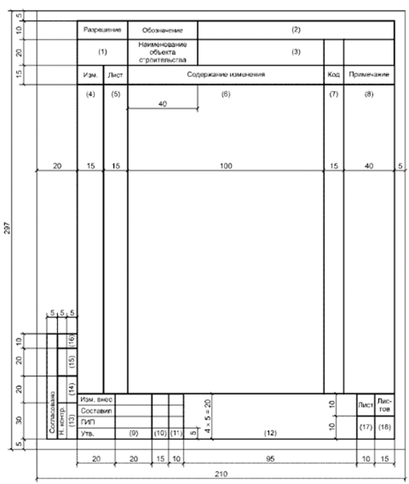
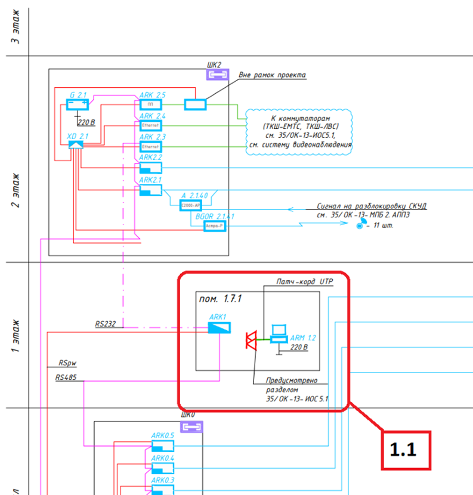
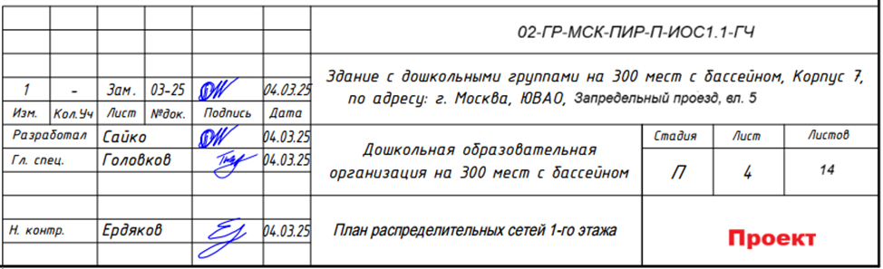
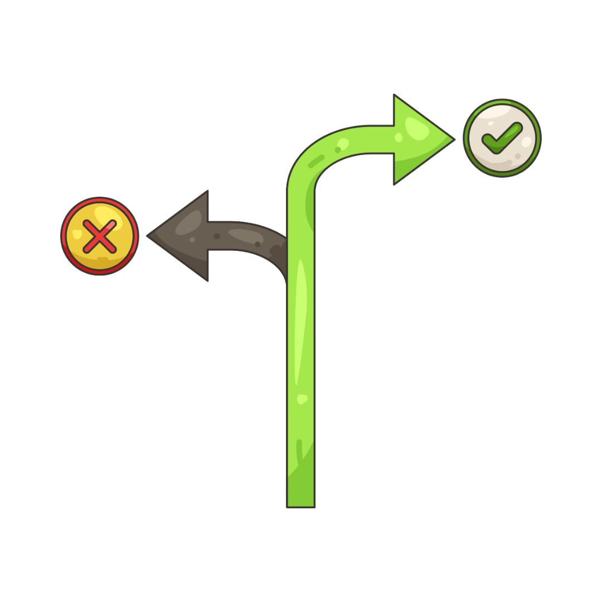

Внесение изменений в ПД и РД по ГОСТ Р 21.101-2020

Главный признак хорошего проектировщика – умение убедить начальника, что твои ошибки – это смелые инновации.
Как внести изменения в ПД и РД
Часто в ходе работы возникает необходимость внести изменения в проектную документацию. Например, в документах обнаружили ошибки или изменились НПД.
Есть несколько причин, по которым в ПД могут внести изменения:
- изменились исходные данные, технические условия на проектирование;
- выявили ошибки или недостатки в ПД;
- изменилось нормативное регулирование;
- выявили неучтенные работы или необходимые изменения.
Перед началом внесения изменений необходимо задать следующие вопросы:
- Как это повлияет на другие разделы? (Если сместили трубу водоснабжения - проверьте, не мешает ли она воздуховоду);
- Нужно ли пересчитывать нагрузки, расходы, мощности;
- Меняются ли нормативные требования
Вносят изменения в ПД на основании соглашения, допсоглашения между заказчиком и проектировщиком. Также при необходимости скорректировать документацию из-за ошибок при проектировании.
Есть три способа вносить изменения в ПД с положительным заключением экспертизы:
- проектное сопровождение (ч. 3.8 ст. 49 ГрК);
- экспертное сопровождение (ч. 3.9 ст. 49 ГрК);
- повторная экспертиза.
Официально термин «проектное сопровождение» в НПД не обозначен. Это неформальное название, которое вытекает из требований пункта 15.2 статьи 48 ГрК и представляет собой подтверждение ГИПа, что корректировка проектной документации соответствует положениям из части 3.8 статьи 49 ГрК. В этом случае изменения в рабочую документацию признаются частью проектной документации.
Право выбрать проектное или экспертное сопровождение принадлежит застройщику. Но в случае проектного сопровождения изменения в ПД должны соответствовать требованиям из части 3.8 статьи 49 ГрК. Повторную экспертизу можно провести в любом случае по инициативе застройщика.
А сейчас рассмотрим порядок действий, как внести изменения в документацию.
Изменением документа, ранее переданного заказчику, является любое исправление, исключение или добавление в него каких-либо данных без изменения обозначения этого документа. Любое изменение в документе, вызывающее какие-либо изменения в других документах, должно одновременно сопровождаться внесением соответствующих изменений во все взаимосвязанные документы.
Изменение документа (в том числе его аннулирование) выполняют на основании разрешения на внесение изменений.
Изменения обозначают порядковыми номерами (1, 2, 3 и т.д.). Один порядковый номер изменения присваивают всем изменениям, которые вносят в документ по одному разрешению. Его указывают для всего документа, независимо от того, на скольких листах он выполнен.
Допускается обозначать изменения (версии) буквенно-цифровыми кодами по правилам, установленным в стандартах организаций.
Рекомендуемая форма разрешения на внесение изменений (РВИ) приведена в приложении Л ГОСТ Р 21.101-2020. Также организация может дорабатывать данную форму и принимать свой вид разрешения. Также Вы можете скачать шаблон РВИ в прикрепленных документах к уроку.

Так в графах указывают следующую информацию:
- в графу 1 – обозначение разрешения, состоящее из порядкового номера разрешения по журналу регистрации разрешений по ГОСТ Р 21.1003 и через разделительный знак (дефис, наклонную черту и т.п.) - двух последних цифр года выпуска разрешения.
Пример – 21/25; 26/25;
- в графе 2 – обозначение документа, в который вносят изменение, а именно шифр документа. Например: 02-ГР-МСК-ПИР-П-ИОС1.1
- в графе 3 – наименование объекта строительства;
- в графе 4 – очередной порядковый номер, присваиваемый изменениям согласно 7.3.1. При выпуске общего разрешения на внесение изменений в несколько документов порядковый номер изменения указывают для каждого документа;
- в графе 5 – номера листов документа, в которые вносят изменения. При замене или аннулировании всех листов документа в графе пишут "Все";
- в графе 6 – содержание изменения, которое приводится в виде текстового описания и/или графического изображения в том виде, в котором оно должно быть после внесения изменений в подлинник документа.
Указывайте причину изменения и способ внесения изменений. Это поможет понять эксперту, на что еще могло повлиять данное изменение.
- в графе 7 – код причины изменения документа в соответствии с таблицей Л.1 ГОСТ 21.101-2020, его допускается не указывать и ставить прочерк.
- в графе 8 – дополнительные сведения;
- в графах 9-11 – фамилии лиц, подписывающих разрешение, их подписи и даты подписания;
- в графе 12 – наименование проектной организации отдела, составившего разрешение;
- в графах 13-16 – наименование соответствующих подразделений или организаций, должности и фамилии лиц, с которыми в установленном порядке согласовывают разрешение, их подписи и даты подписания, а также подпись нормоконтролера;
- в графе 17 – порядковый номер листа разрешения. Если разрешение состоит из одного листа, графу не заполняют;
- в графе 18 – общее количество листов разрешения.
В графическую часть изменения вносятся согласно требованиям Приложения М ГОСТ Р 21.101-2020. Пример смотрите на рисунке ниже:

При внесении изменений в листы графической части раздела (подраздела) в графе «Примечание» ведомости графической части указывают:
а) для измененных листов при внесении первого изменения - «Изм. 1», последующих изменений - дополнительно очередные номера изменений, отделяя их от предыдущих точкой с запятой.
Пример - Изм. 1; 2;
б) для замененных листов при номере изменения - «(Зам.)».
Пример - Изм. 1; 2 (Зам.);
в) для исключенных (аннулированных) листов при номере изменения - «(Аннул.)».
Пример - Изм. 1 (Аннул.);
г) для дополнительных листов при номере изменения - «(Нов.)».
Пример - Изм. 1 (Нов.).
7.4.5 При внесении изменений в документы графической части вносят исправления в ведомость документов графической части.

Карточки с ответами 1
Карточка 1
Можно вносить изменения устно, если все согласны

Показать ответ
По ГОСТ Р 21.101-2020 все изменения должны быть оформлены письменно
Карточка 2
Если изменил один чертеж, необходимо проверить все связанные с ним документы

Показать ответ
Проект - единая система. Одно изменение может повлиять на десять других элементов
. Источник и ограничения. Проверка ответов, анимация и серверные функции недоступны в статической копии.